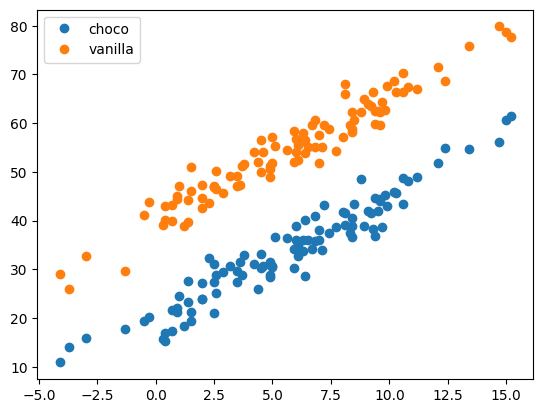
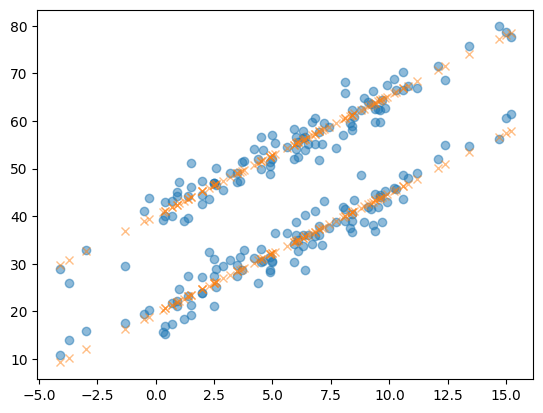

import numpy as np
import pandas as pd
import matplotlib.pyplot as plt
import sklearn.linear_model[STBDA2023] 03wk-010: 아이스크림(초코/바닐라), 회귀분석
해당 자료는 전북대학교 최규빈 교수님 2023학년도 2학기 빅데이터분석특강 자료임
03wk-010: 아이스크림(초코/바닐라), 회귀분석
최규빈
2023-09-21
1. 강의영상
https://youtu.be/playlist?list=PLQqh36zP38-yMATKoY2e3Ltd85lyvT-Ht&si=8Ke2fNuWswEvFReG
2. Imports
3. Data
- 전주시의 기온 불러오기
temp = pd.read_csv('https://raw.githubusercontent.com/guebin/DV2022/master/posts/temp.csv').iloc[:,3].to_numpy()[:100]
temp.sort()temp # 전주시의 기온, 100개array([-4.1, -3.7, -3. , -1.3, -0.5, -0.3, 0.3, 0.4, 0.4, 0.7, 0.7,
0.9, 0.9, 1. , 1.2, 1.4, 1.4, 1.5, 1.5, 2. , 2. , 2. ,
2.3, 2.5, 2.5, 2.5, 2.6, 2.6, 2.9, 3.2, 3.5, 3.5, 3.6,
3.7, 3.8, 4.2, 4.4, 4.5, 4.5, 4.6, 4.9, 4.9, 4.9, 5. ,
5. , 5.1, 5.6, 5.9, 5.9, 6. , 6. , 6.1, 6.1, 6.3, 6.3,
6.4, 6.4, 6.5, 6.7, 6.8, 6.8, 7. , 7. , 7.1, 7.2, 7.4,
7.7, 8. , 8.1, 8.1, 8.3, 8.4, 8.4, 8.4, 8.5, 8.8, 8.9,
9.1, 9.2, 9.3, 9.4, 9.4, 9.5, 9.6, 9.6, 9.7, 9.8, 9.9,
10.2, 10.3, 10.6, 10.6, 10.8, 11.2, 12.1, 12.4, 13.4, 14.7, 15. ,
15.2])- 아래와 같은 모형을 가정하자.
\[\textup{초코 아이스크림 판매량} = 20 + \textup{온도} \times 2.5 + \textup{오차(운)}\]
\[\textup{바닐라 아이스크림 판매량} = 40 + \textup{온도} \times 2.5 + \textup{오차(운)}\]
의미: (1) 온도가 1 올라가면 판매량이 2.5정도 오른다. (2) 동일 온도라면, 바닐라아이스크림은 초코아이스크림보다 20만큼 잘팔린다.
np.random.seed(43052)
choco = 20 + temp * 2.5 + np.random.randn(100)*3
vanilla = 40 + temp * 2.5 + np.random.randn(100)*3plt.plot(temp,choco,'o',label='choco')
plt.plot(temp,vanilla,'o',label='vanilla')
plt.legend()<matplotlib.legend.Legend at 0x7fcab83c70d0>
- 주어진 자료: 우리는 아래를 관측했다고 생각하자.
df1 = pd.DataFrame({'temp':temp,'sales':choco}).assign(type='choco')
df2 = pd.DataFrame({'temp':temp,'sales':vanilla}).assign(type='vanilla')
df = pd.concat([df1,df2])
df| temp | sales | type | |
|---|---|---|---|
| 0 | -4.1 | 10.900261 | choco |
| 1 | -3.7 | 14.002524 | choco |
| 2 | -3.0 | 15.928335 | choco |
| 3 | -1.3 | 17.673681 | choco |
| 4 | -0.5 | 19.463362 | choco |
| ... | ... | ... | ... |
| 95 | 12.4 | 68.708075 | vanilla |
| 96 | 13.4 | 75.800464 | vanilla |
| 97 | 14.7 | 79.846568 | vanilla |
| 98 | 15.0 | 78.713140 | vanilla |
| 99 | 15.2 | 77.595252 | vanilla |
200 rows × 3 columns
5. 분석
A. 데이터
X = df[['temp','type']] # 독립변수, 설명변수, 피쳐
y = df[['sales']] # 종속변수, 반응변수, 타겟 X = X.assign(type = [type == 'choco' for type in X.type])B. Predictor 생성
predictr = sklearn.linear_model.LinearRegression()
predictr LinearRegression()In a Jupyter environment, please rerun this cell to show the HTML representation or trust the notebook.
On GitHub, the HTML representation is unable to render, please try loading this page with nbviewer.org.
LinearRegression()
C. 학습 (fit, learn)
predictr.fit(X,y)LinearRegression()In a Jupyter environment, please rerun this cell to show the HTML representation or trust the notebook.
On GitHub, the HTML representation is unable to render, please try loading this page with nbviewer.org.
LinearRegression()
D. 예측 (predict)
yhat = predictr.predict(X)plt.plot(df.temp,df.sales,'o',alpha=0.5)
plt.plot(df.temp,yhat, 'x',alpha=0.5)
- 어떻게 맞춘거지?
\[\textup{아이스크림 판매량} = 40 + \textup{아이스크림종류} \times (-20) + \textup{온도} \times 2.5 + \textup{오차(운)}\]
predictr.coef_, predictr.intercept_(array([[ 2.52239574, -20.54021854]]), array([40.16877158]))- 온도가 -2이고, type이 초코라면? 예측값은?
Xnew = pd.DataFrame({'temp':[-2.0],'type':[1]})
Xnew| temp | type | |
|---|---|---|
| 0 | -2.0 | 1 |
predictr.predict(Xnew)array([[14.58376156]])- 온도가 -2이고, type이 바닐라라면? 예측값은?
Xnew = pd.DataFrame({'temp':[-2.0],'type':[0]})
Xnew| temp | type | |
|---|---|---|
| 0 | -2.0 | 0 |
predictr.predict(Xnew)array([[35.1239801]])6. 데이터를 전처리하는 다른 방법
- 데이터
X = df[['temp','type']] # 독립변수, 설명변수, 피쳐
y = df[['sales']] # 종속변수, 반응변수, 타겟 - 원-핫 인코딩
X = pd.get_dummies(X)
X| temp | type_choco | type_vanilla | |
|---|---|---|---|
| 0 | -4.1 | 1 | 0 |
| 1 | -3.7 | 1 | 0 |
| 2 | -3.0 | 1 | 0 |
| 3 | -1.3 | 1 | 0 |
| 4 | -0.5 | 1 | 0 |
| ... | ... | ... | ... |
| 95 | 12.4 | 0 | 1 |
| 96 | 13.4 | 0 | 1 |
| 97 | 14.7 | 0 | 1 |
| 98 | 15.0 | 0 | 1 |
| 99 | 15.2 | 0 | 1 |
200 rows × 3 columns
- 이후의 과정은 동일
predictr = sklearn.linear_model.LinearRegression()
predictr.fit(X,y)
yhat2 = predictr.predict(X)plt.plot(df.temp,df.sales,'o',alpha=0.5)
plt.plot(df.temp,yhat2, 'x',alpha=0.5)- 모형을 어떻게 바라본걸까?
predictr.coef_array([[ 2.52239574, -10.27010927, 10.27010927]])predictr.intercept_array([29.89866231])\[\textup{아이스크림 판매량} = 30 + \textup{초코} \times (-10) + \textup{바닐라} \times 10 + \textup{온도} \times 2.5 + \textup{오차(운)}\]
7. 모형을 평가하는 방법
predictr.score(X,y)0.9628857449454437